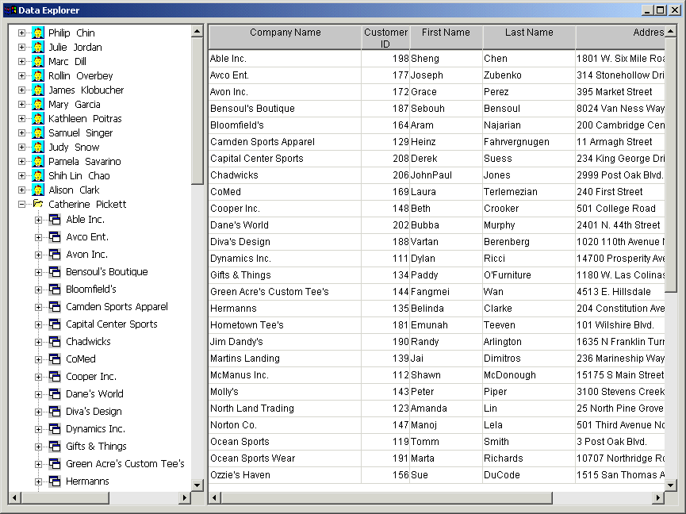
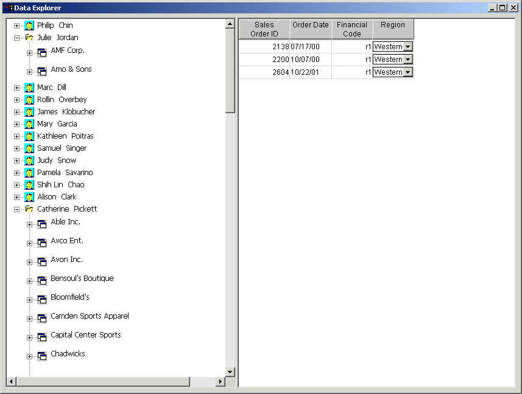
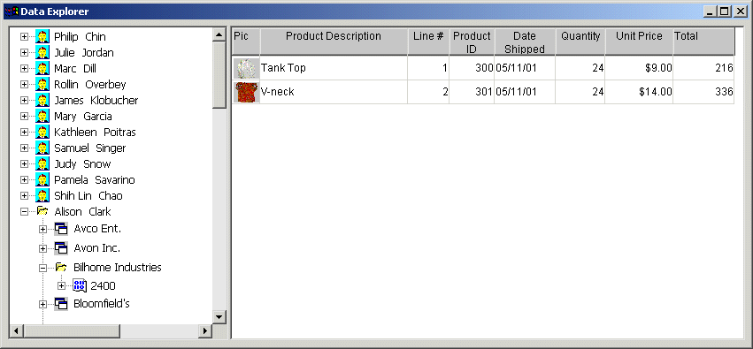
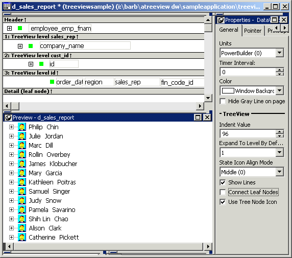
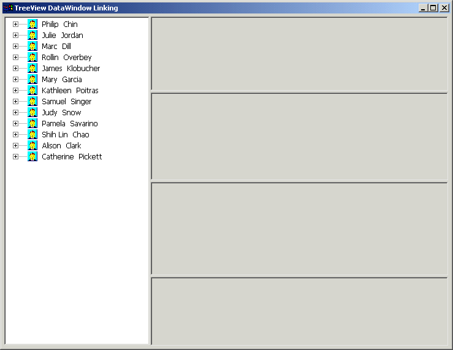
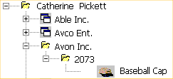
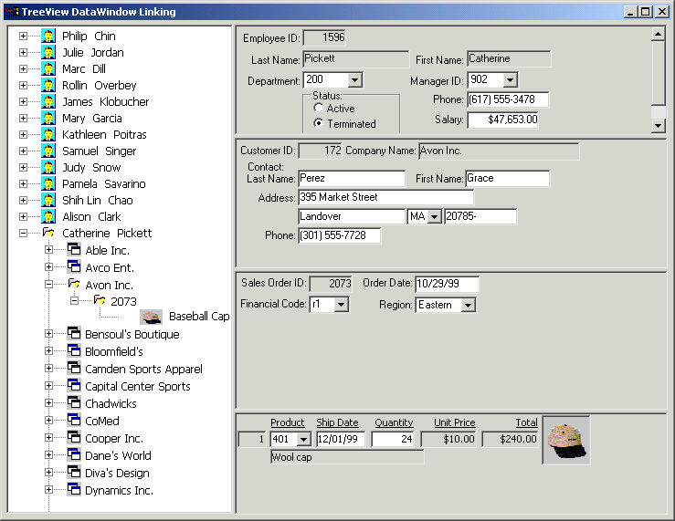
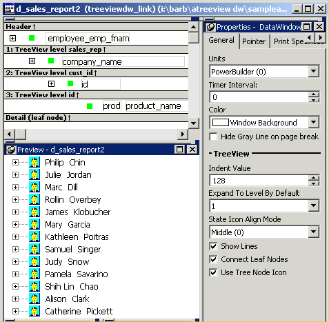

This section provides you with two samples that demonstrate use of the TreeView DataWindow.
The two TreeView DataWindow samples are:
Both samples use the employee, sales_order, sales_order_items, customer, and product tables in the EAS Demo DB database.
The TreeView DataWindows are d_sales_report and d_sales_report2. Each TreeView DataWindow has three TreeView levels:
Clicking on each TreeView level displays details in a DataWindow on the right. For example, if you click a name in the TreeView DataWindow on the left, detailed customer data displays in the DataWindow on the right.

You can click on any TreeView level in the Data Explorer. If you click a company name in the TreeView DataWindow on the left (for example, Able Inc., under Catherine Pickett), order information displays on the right.

If you click an order ID in the TreeView DataWindow on the left (for example, order ID 2400, under Bilhome Industries, under Alison Clark), the customer order information displays on the right.

Here is the TreeView DataWindow used in the Data Explorer.

 One TreeView DataWindow The Data Explorer uses one TreeView DataWindow, but DataWindows
that are not TreeView DataWindows also support the Data Explorer's
functionality.
One TreeView DataWindow The Data Explorer uses one TreeView DataWindow, but DataWindows
that are not TreeView DataWindows also support the Data Explorer's
functionality.
The code in the Clicked event uses GetBandAtPointer to determine which DataWindow to display. Clicking on some editable items in the detail DataWindow opens a window in which you can manipulate the data.
The PopMenu menu object has two menu items that call the CollapseAll and ExpandAll methods to collapse or expand all the nodes in the TreeView.
When you first run the Data Linker, no data displays on the right side of the window.

To use the Data Linker, you first expand an employee name and a company's data in the TreeView DataWindow.

Expanding the TreeView displays the company names, the orders for the company you select, and in the detail band, the icon and name for each item in the order.
You can click on each of the TreeView levels in order, and then click in the detail band to display the details in the four DataWindows on the right.
For example, if you click first on Catherine Pickett, then on Avon Inc., then on 2073, and last on Baseball Cap, the data in each of the related DataWindows displays on the right. You can also update the data in each of the DataWindows.

Here is the TreeView DataWindow used in the Data Linker sample.

 One TreeView DataWindow The Data Linker uses one TreeView DataWindow, but other DataWindows
that are not TreeView DataWindows also support the Data Linker's
functionality.
One TreeView DataWindow The Data Linker uses one TreeView DataWindow, but other DataWindows
that are not TreeView DataWindows also support the Data Linker's
functionality.
The code in the Clicked event uses GetBandAtPointer to determine which DataWindow to display.